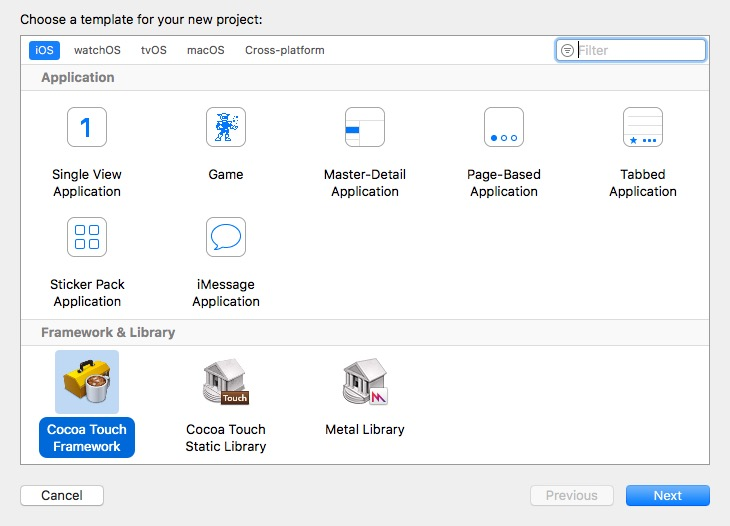
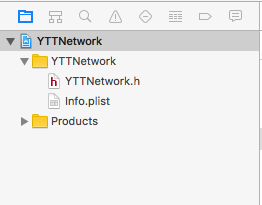
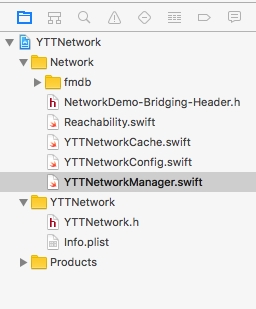
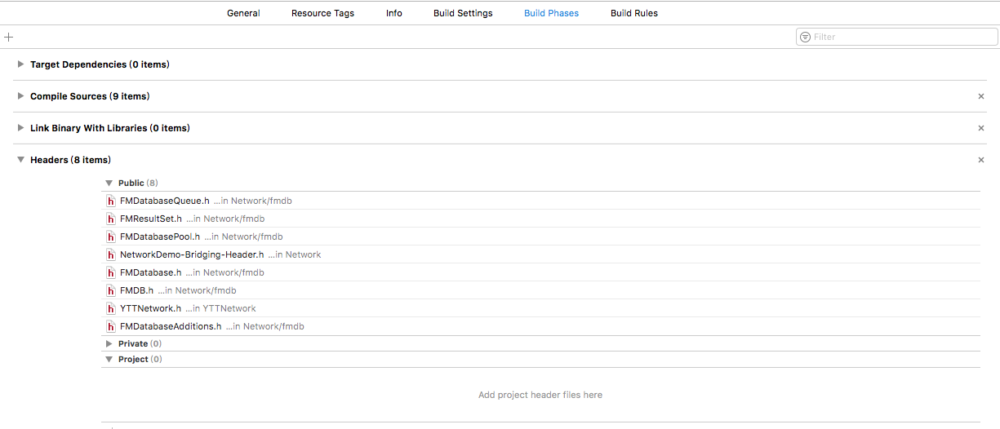
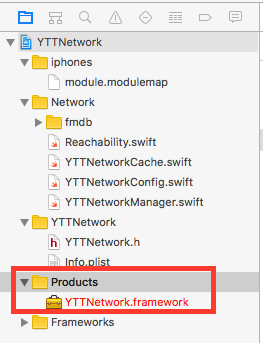
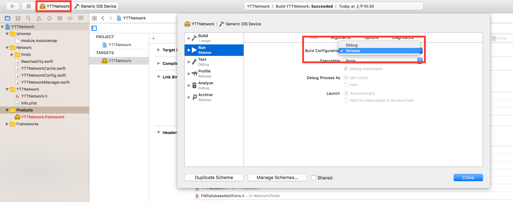
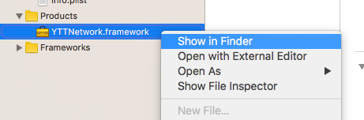
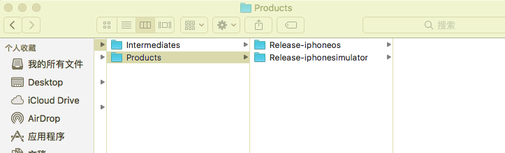

在开发中我们常常会用到一些第三方 SDK 库，使用时只需将 framework 文件添加到项目中即可，十分方便。同样地，我们也可以创建自己的 framework 框架，用来封装一些常用的工具方法、框架类等。一来不会使源代码完全暴露在外，二来也便于代码复用。
打包篇
新建项目
选择 File->New->Project->Framework&Library->Cocoa Touch Framework, 点击 Next,语言选择 swift 如图:

创建完成生成以下目录:

- xxx.h 文件的作用是整个包对外提供的入口头文件，除了正常定义参数属性之外还提供 Swift项目内引用的OC文件的import引用
- info.plist 文件的作用就如同正常项目的plist文件作用，用来定义或添加一些属性。
添加文件
可以新建文件也可以在已有项目拷贝
这里要注意一下：由于打包类库工程不是一个完整项目工程，所以并没有AppDelegate等文件，所以涉及到这些的文件要额外处理，或改代码，或适当改变功能。
注意：工程如果有桥接文件，是不能拷贝过来的，否则编译不通过。桥接文件下的 import 引用应该放到 xxx.h 文件中
注意: 如果 swift 文件想要暴露给外部使用,类及方法要用 public 修饰
经过以上操作本库已基本完成

注意: 如果用到资源文件,如:图片,视频,音频等直接用Assets.xcassets是无效的,我们要新建文件夹,将图片放入其中,添加后缀名.bundle,例如 xxx.bundle,使用图片时图片名:xxx.bundle/icon.png.
文件添加完毕就可以尝试 build 一下了
正常情况下，如果我们swift项目引入了oc文件，我们必须通过一个桥接文件来处理两者之间的转换，而我们在新建类库包的时候，是禁止桥接文件存在的，即使你添加了，也会永远编译不过，打包不了。
所以这里就用到这个 xxx.h 头文件了。
我们可以通过这个文件来实现两者之间的转换，前提就是必须先将oc的.h暴露出来，否则即使你import，也会报错找不到.h 文件。
暴露文件给外部使用
选择 target->Build Phases->Header, 将要暴露给外部使用OC 的.h 的文件拖到 public 下,如果是 swift 只需要将类和方法声明成 public

编译通过，查看这里

红框内就是最终我们得到的Framework包。
右击本地查看，会看到本类库以及对应的依赖第三方库包，后面在其他项目引用的时候，这些都是需要的（需要一起拷贝添加）。
合并真机和模拟器framework
包的分类
编译得到的包可分为 debug 包和 release包, debug 包一般用于测试,如果要发布务必打 release 包.

release 包又包含模拟器包和真机包,发布时需要将模拟器包与真机包合并
去包文件夹
合并包
终端输入 lipo -create 真机路径 模拟器路径 -output 真机路径（ps：这几个路径就是上图拖动到终端后的路径）
但是并没有完，不知道为什么，终端这样合并只是假象，你需要手动去将Modules里的的 xxx.swiftmodule文件合并到一起
引用篇
- 新建空白工程
- 将之前所得到 framework 拷贝到项目
- 在工程Targets－General－EmbeddedBinaries内添加Frameworks包
附加
引用 CommonCrypto
项目中用到了 MD5加密, swift 是无法调用 C语言库的,在 xxx.h 中添加#import
报错,解决方法:
新建 module.modulemap 文件,在里边添加
2
3
4
header "/Applications/Xcode.app/Contents/Developer/Platforms/iPhoneOS.platform/Developer/SDKs/iPhoneOS.sdk/usr/include/CommonCrypto/CommonCrypto.h"
export *
}
选择 target->Build Settings, 找到 swift compler-Search Paths, 在 Import paths 添加创建文件路径
在需要 MD5机密的文件中 import CommonCrypto
参考博客
iOS打包framework - Swift完整项目打包Framework，嵌入OC项目使用
iOS打包Framework真机和模拟器兼容合并版本 - 详细攻略步骤